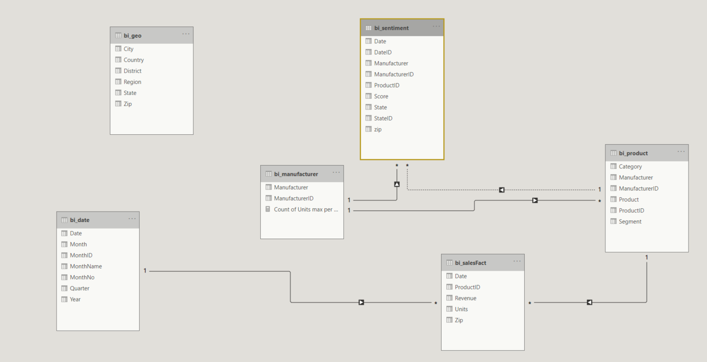
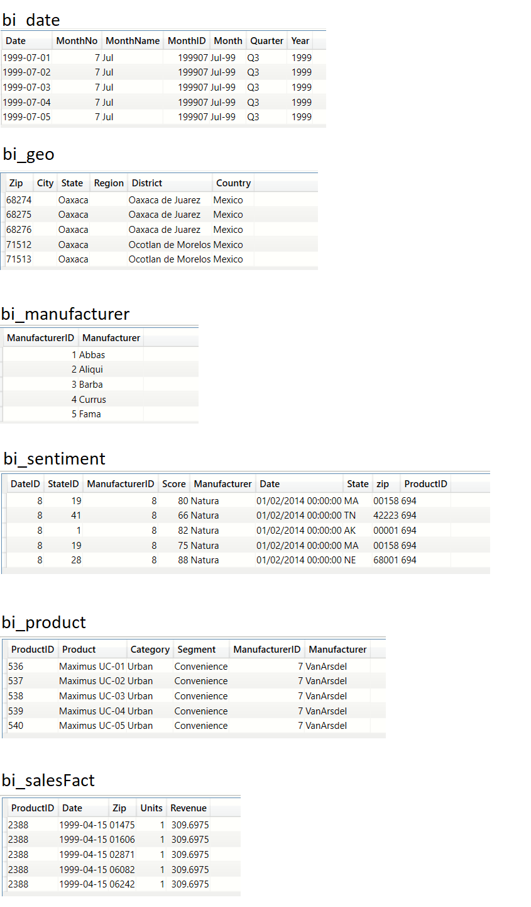
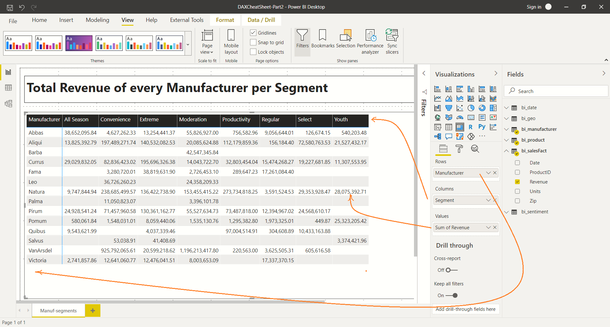
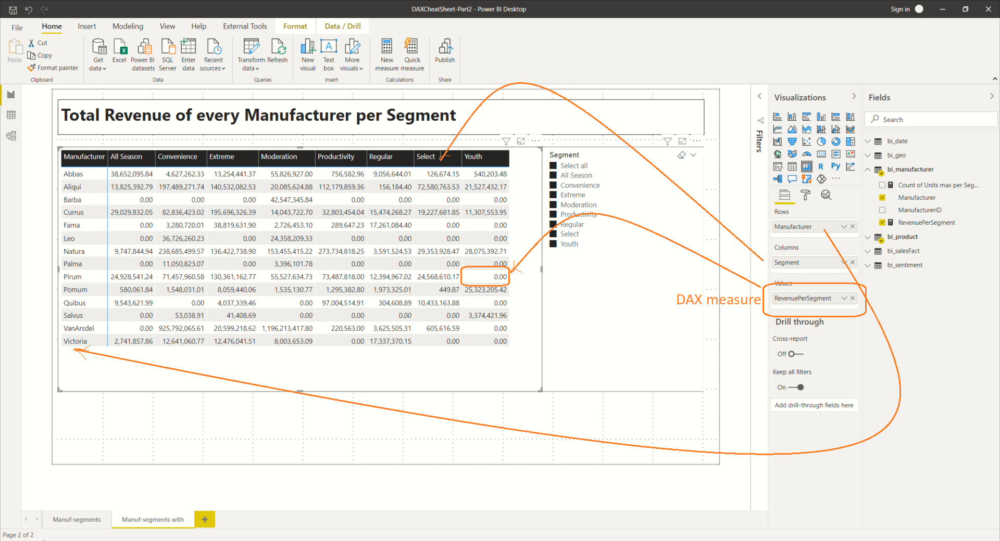

Overview
This is a continuation of my previous article DAX Chear sheet - Part 1.
In this article, I have continue to expand the scenarios using the same MS Access database from MS learing
that I used in the first part
Sample data
The DAX expressions in this article are written around the
MS Access sample database downloadable from Microsoft Learning.
A copy of the same can also be downloaded from my Github repo here.
A copy of the Power BI report which references this MS Access database can be downloaded from my Github repo here.
Database schema

Data
To get a feel of what the data looks like I have presented the top 5 rows from each of the tables in this database

Primer on DAX studio and writing DAX expressions
I have a very brief intro to getting started with DAX Studion in the Part 1 of this series.
In the interest of brevity, I will skip the details.
I want a table of Manufacturers along the rows and revenues for every Segment along the columns (Visual approach, no DAX)

In this approach, we use a Matrix visual. There is no need for any custom DAX. Power BI will harness the relationships
and throw the data into the appropriate cells of the matrix.
-
The Segment column of bi_product goes into the Columns of the Matrix
-
The Manufacturer column of the bi_manufacturer table into the Rows
-
We summarize by the Sum measure on the Revenue column of bi_sales table
This is fairly simple and gets you started very quickly. But, I find that there are some serious limitations.
-
The Matrix visual does not let me sort the rows by clicking on the column header. This is a known limitation as of
-
I cannot control the order in which the Segments are listed. Power BI will arrange them in alphabetical order
-
If a manufacture has not registered any sale for a specific segment then Power BI shows a blank cell.
A zero would convey more meaning.
I want a table of Manufacturers along the rows and revenues for every Segment along the columns (Visual approach, with DAX measure to return 0)
In this approach we create a measure on the bi_manufacture table with the name RevenuePerSegment
RevenuePerSegment =
VAR totalRevenue=SUM(bi_salesFact[Revenue])
VAR retval=CALCULATE( IF(ISBLANK(totalRevenue),0,totalRevenue) )
return retval

I want a table of Manufacturers along the rows and revenues for every Segment along the columns (Segments in a slicer)
you were here - use PIVOT
code snippet comes here
My ideas 1
PIVOT table
Monthly/Quarterly break down of sales across all years
Show the significance of ALL , by showing a table of Manuf-%sales of Combined sales. Have a slicer of Manuf
Show the significance of ALL , by showing a table of Manuf-Segment-Sales. Have a slicer of Segment. Add a column to show % of total sales
Ideas 1
How to PIVOT - manufacturer and segments
Simple scenario. Manuf along vertical direction. Segments along Horizontal direction. Use a Table visual for sorting - not matrix
Show the unit sales of Segment1 and Segment2 for every manufacture
- This could be done using a hard coded measure approach. 1 measure per segment
-
Have a list of Segments. Have a measure on Manufacturer. A slicer which shows the list of segments. A matrix table and custom measure based on Age bands demo.
The Rows of the matrix could be Country-City hierarchy or any hierarchy
Year wise break down for every manufacturer
-
Follow same approach as above, But, this could be done via Histogram or Matrix visual
-
Years along X axis along with slicer
-
Manuf could be along rows of a Matrix visual
Monthly sales per manufacturer - plotted on a histogram
- Year-month along X -axis
- Multi-column stacked chart. 1 per manuf
Fraction of total sale per Segment for every Manufacture
- Use a measure to compute the value
- Demonstrate the significance of ALL
- AllEXCEPT could also be used
Sentiment - Product segment with best and worst segment per manufacturer
Think.....
Top 3 cities with Revenue for every manufacture.
- Manuf along Rows
- First Best City, Second Best City , Third Best City as column titles
- Top most revenue, next highest revenue , third highest revenue along cell values
- Could be done by created a parameters table BestCitiesForRevenu. A measure attached to this table
Comments from Reddit
A similar coverage of time intelligence functions will be helpful. An explanation of evaluation contexts and context transition will also help
Monthly break down of Sales for every manufacturer
Best selling and worst selling Product segment for every Manufacturer on an yearly basis
to be done. This answers the question - "Which manufacturer excels in which product and how did this change over the years?"
Create a Date table from Sales table
to be done. This addresses the problem of reporting against a date hierarchy without the need for explicit data entry
Refer this link (to be done) to understand the need for a date table
DO WE NEED THIS - Add a calculated RevenuePerUnit column to the Sales table
to be done. This hels answering the question "Which product generates more revenue per every unit sold?"
Create a static table (DATATABLE)
to be done. When should we use this? Consider the scenario when we need to display all Product Segments in a specific order
Create a static table (Table constructor)
to be done.